DJ-kurs · Musikalske reiser · Drømmer
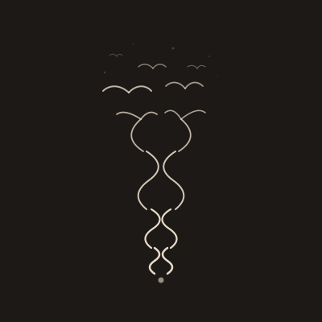
Forrige versjon med mange tynne bølger og subtile fugler.
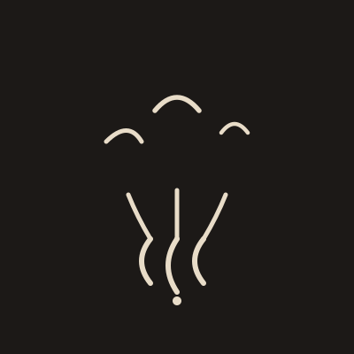
Tre lydbølger stiger fra et punkt, bøyer seg utover, og blir til tre fugler. Tykkere strøk (5–6px), færre elementer — lesbart selv som liten ikon. Samme idé, mye sterkere silhuett.
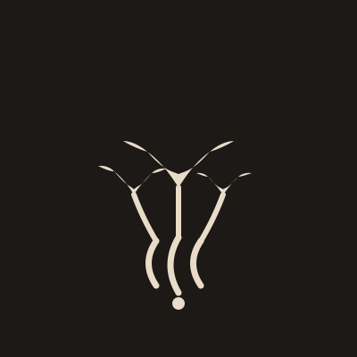
Tre lydbølger stiger fra et punkt og blir til tre fylte fugler med tydelige vinger. Inspirert av Twitter-logoens énkle, sterke form.
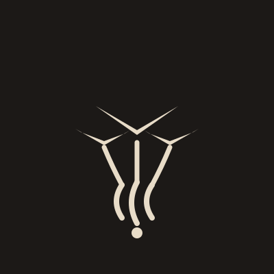
Tre lydbølger stiger fra et punkt og blir til tre ultra-bold chevron fugler. Ekstremt enkel og lesbar, inspirert av Nike-swoosh og Lufthansa.
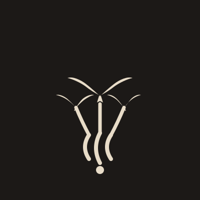
Tre lydbølger stiger fra et punkt og blir til tre organiske, myke svale-silhuetter. Fuglene er runde og fulle, inspirert av Lufthansa-kranen og svaler mot himmelen.
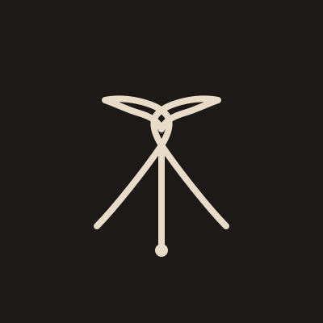
Én sammenhengende bølge som morfer til én fugl. Hele logoen er én linje/form, inspirert av Saul Bass' radikale minimalisme.
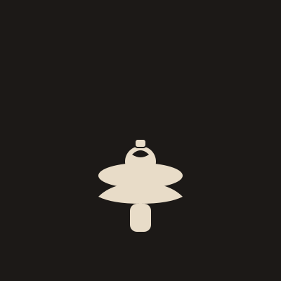
En hånd bærer et fat med iskrem på toppen. Kombinerer servitørrollen og iskrem-salg i én logo.
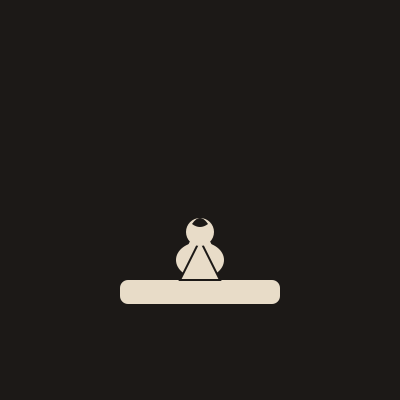
En stilisert iskremvaffel foran disken, med en smilende figur bak. Logoen forteller historien om å selge iskrem i butikk.
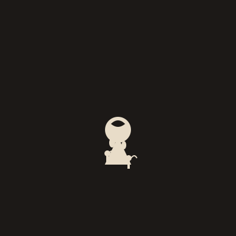
Iskrem smelter og blir til musikknoter – en logo som kobler kreativitet, musikk og din historie som iskremselger.
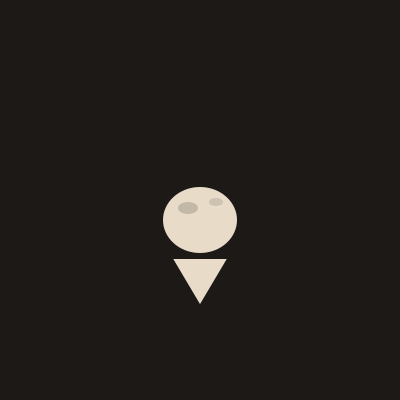
En tydelig, flat og ikonisk iskrem-scoop med vaffel, inspirert av Strawberry Hotels-logoens stil og "shine"-effekt. Logoen er lett gjenkjennelig og fungerer i alle størrelser.
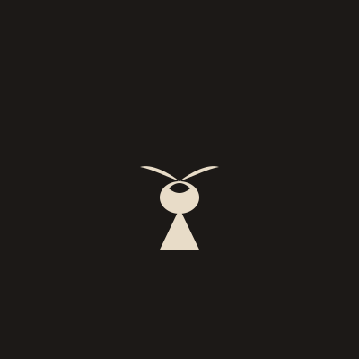
En elegant iskremvaffel med en abstrakt fugl i én form – inspirert av premium-logoer som Lufthansa og Twitter. Minimalistisk, sterk og lett gjenkjennelig.
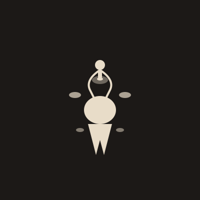
En iskremkule som eksploderer i former, stråler og bevegelse – med en figur som hopper ut. Logoen er uvanlig, energisk og full av fantasi.
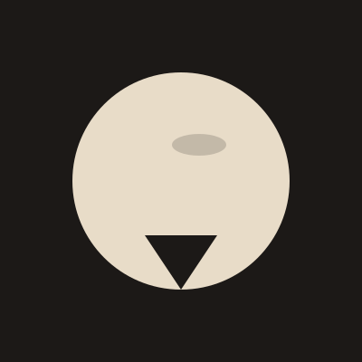
En iskremkule i sirkelform, inspirert av ikoniske logoer som BMW, Pepsi og Target. Gir en følelse av helhet og vennlighet.
En iskremvaffel i rektangulær form, inspirert av logoer som Microsoft og Lego. Utstråler struktur og pålitelighet.
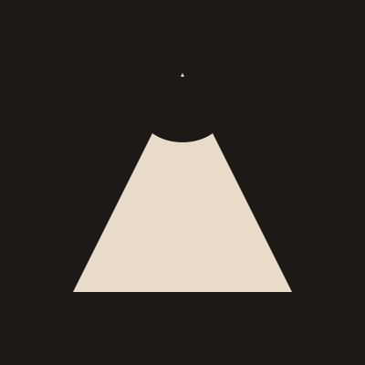
En iskremvaffel i trekantform, inspirert av logoer som Adidas og Delta. Gir en følelse av bevegelse og fremdrift.
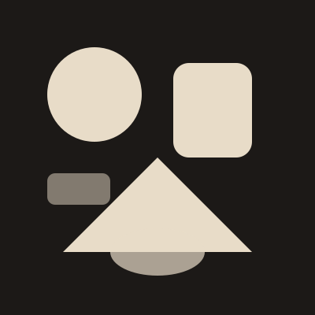
Logoen består kun av geometriske former – sirkel, rektangel, trekant og ellipse – uten symboler eller figurative elementer. Ren, abstrakt og moderne.
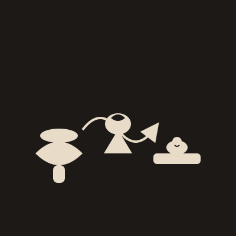
Logoen viser reisen fra servitør (hånd med fat) til iskremvaffel og til slutt en smilende figur bak iskremdisken. En pil binder sammen elementene og symboliserer utvikling og endring.
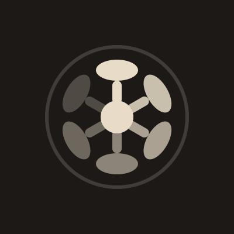
Sirkelen dannes av seks overlappende iskrem-scoopere i ulike vinkler, med et abstrakt scoop i midten. Logoen er dynamisk, kreativ og langt fra generisk.
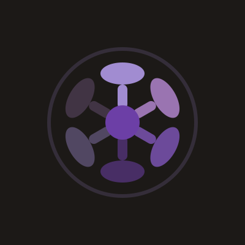
En variant av scooper-sirkel-logoen med lilla nyanser – symboliserer visdom og erfaring. Dynamisk og kreativ, med dyp lilla i midten for ekstra tyngde.